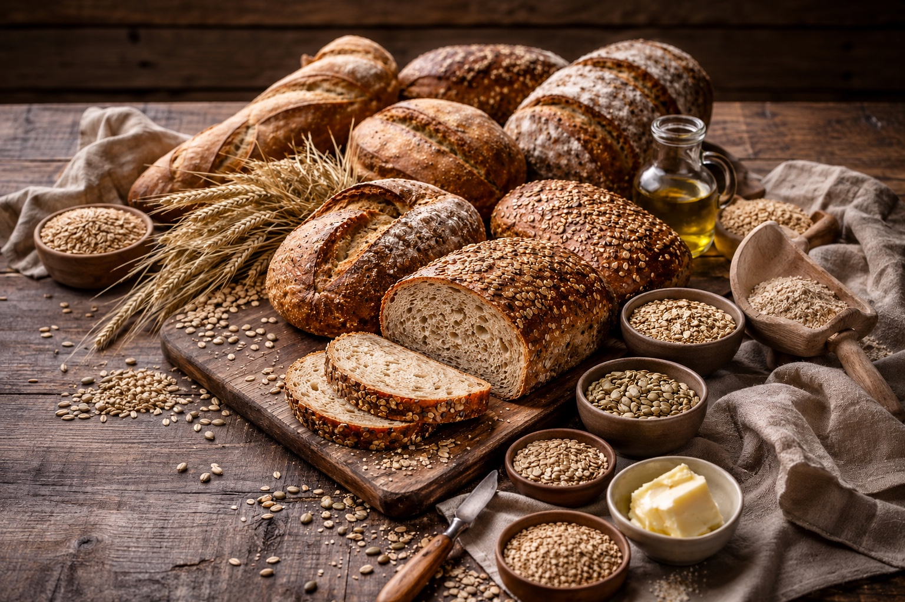

Superfoods: Real Bread
Last updated: January 22, 2026

Bread has been a foundational food across cultures for centuries, but modern processing and ultra-refined ingredients have changed how many people experience it today. Real bread—made simply and eaten thoughtfully—can still be nourishing, filling, and metabolically supportive.
- Properly made bread can be nourishing, filling, and metabolically gentle.
- Most modern bread problems come from processing, additives, and speed—not wheat itself.
- Short ingredient lists and slow fermentation matter more than labels.
- You can get most benefits by choosing better bread—or baking simply at home.
Purpose
Help readers distinguish between highly processed commercial bread and simpler, more nourishing forms of bread so they can make calmer, more informed food choices without unnecessary fear or restriction.
Simple foods become confusing when processing increases
Bread is one of the oldest staple foods in human history, yet modern commercial versions often prioritize shelf life, softness, and convenience over nourishment and ingredient quality.
This creates confusion because many people judge all bread based on highly processed versions rather than simpler traditional forms made with fewer ingredients and slower methods.
Why bread has a bad reputation
Bread isn’t “good” or “bad” by default. What changed is the average bread most people encounter: refined flour, low fiber, added sugars, seed oils or emulsifiers, and high sodium—designed for shelf life and softness, not nourishment. When bread is mostly refined starch, it can spike blood sugar quickly and leave you hungry again soon.
The backlash also comes from diet trends that treat all carbs as the enemy. But metabolic health is usually about quality + portion + pairing. A slice or two of high‑fiber, minimally processed bread—paired with protein, fat, and/or fiber—can fit well for many people. The problem is that “white‑bread‑style calories” show up everywhere, and people unknowingly eat them in large portions.
So the goal isn’t “never eat bread.” It’s to make bread work for you: choose better ingredients, keep portions realistic, and use bread as a vehicle for nutrient‑dense toppings rather than as empty bulk.
What makes bread nourishing
Metabolic resilience is about stable energy, stable mood, and stable decision‑making—especially under stress. Bread can either help or hurt depending on fiber, refinement, and how you eat it.
- Fiber slows the curve: whole grains and seeds tend to blunt fast blood‑sugar spikes.
- Pairing matters: add protein (eggs, fish, Greek yogurt) and healthy fats (olive oil, avocado, nuts) to reduce “crash‑and‑crave.”
- Portion sets the outcome: two thick slices of refined bread is a different metabolic event than one slice of high‑fiber sourdough.
- Timing matters: many people handle carbs better earlier in the day or after activity—test what works for you.
If you’re actively working on glucose control, consider using bread as a supporting actor rather than the main course: open‑face sandwiches, smaller servings, or bread only on training days.
Types of bread (from best to worst)
Different breads solve different problems. Use this as a practical map (not a purity test):
Sourdough (true fermented)
Often easier to digest for some people. Great for sandwiches and toast. Quality varies—look for simple ingredients and a sourdough starter/culture.
100% whole grain
Higher fiber and micronutrients. More filling. Can be denser and more flavorful; pairs well with savory toppings and soups.
Sprouted grain
Often higher nutrient availability and a “hearty” texture. Usually pricier but can be a strong everyday choice.
White / enriched flour bread
Soft and convenient, but typically low fiber and easy to overeat. If you use it, keep portions smaller and pair with protein/fat/fiber.
Bottom line: for resilience and steady energy, prioritize breads that are minimally processed and higher fiber, then adjust based on digestion and performance.
Buying better bread
A simple rule: short ingredient list, recognizable foods. The best store breads often look “boring” on the label—flour, water, salt, yeast/sourdough culture—maybe seeds. The more the label reads like a chemistry set, the more likely you’re buying shelf‑life engineering.
Quick label checks
- First ingredient: ideally “whole wheat/whole grain flour” (not “enriched wheat flour”).
- Fiber: higher is better; many “wheat” breads are still low‑fiber.
- Sugar: avoid breads that taste like dessert—added sugar isn’t necessary.
- Sodium: compare brands; some are surprisingly salty.
- Marketing traps: “multigrain,” “wheat,” “artisan,” and “made with whole grain” can still be mostly refined flour.
If you tolerate it well, sourdough can be a great option: fermentation may improve flavor, texture, and digestion for some people. For maximum control (and usually better taste), making bread at home lets you pick the flour, skip unnecessary additives, and adjust salt/sugar to your preference.
If you’re optimizing metabolic health, consider portion + pairing: have bread with eggs, yogurt, tuna, olive oil, or beans—rather than bread alone. That slows digestion and often reduces the blood‑sugar “rollercoaster.”
Fortification & folic acid: what to know
When you’re comparing breads and flours, you’ll often see labels like enriched, fortified, or added folic acid. Fortification was introduced as a population-level public health measure (especially for pregnancy-related needs), but it also means everyone eating refined flour products may be consuming synthetic additives by default.
For most people, small amounts are unlikely to be a day-to-day problem. Still, if you’re optimizing metabolic resilience, you may prefer to minimize “silent additives” and keep your staples as close to whole-food form as possible.
- Read the flour label: “enriched flour” typically includes added vitamins/minerals (often folic acid).
- Prefer whole grains: whole wheat, rye, oats, and other intact grains provide naturally occurring folate plus fiber and micronutrients.
- Look for “unenriched” or “unfortified” options: some stone-ground, organic, or specialty flours are sold without enrichment.
- Choose sourdough when possible: fermentation can improve digestibility for some people and may reduce the “spike-and-crash” feel of ultra-refined breads.
Note: Laws and labeling standards vary by country. The safest approach is to rely on the ingredient list on the specific bag/loaf you’re buying.
Making your own bread
Start simple: flour, water, salt, and time. If you’ve never baked before, aim for a forgiving loaf (a basic no‑knead or beginner sourdough) and repeat it until the motions feel automatic.
Why it matters: longer fermentation gives yeast and bacteria time to break down some starches and proteins. Many people find long‑fermented bread feels “lighter” and steadier on energy than fast, commercial loaves.
A practical rhythm that works: mix dough in the evening, let it ferment overnight, shape in the morning, and bake the same day (or cold‑proof in the fridge and bake the next day). Once you find a cadence, baking once or twice a week can cover most needs.
Reduce friction: keep a small “bread kit” together (scale, bowl, jar, parchment, and a Dutch oven if you use one). Slice and freeze extras so you always have good bread without daily effort.
Optional add‑ins
Add‑ins should support digestion and stability, not just flavor. Think of them as “nutrient boosters” you can rotate based on goals (energy, satiety, gut comfort) and what you tolerate well.
Seeds: flax and chia add soluble fiber (helpful for steadier glucose response); sunflower and sesame add minerals and crunch. If using flax/chia, a brief soak in water helps them integrate evenly.
Whole grains: rye and oats bring beta‑glucans (a type of fiber linked with improved metabolic markers). Spelt can be a nice middle ground—more character than white flour, often gentler than some modern wheat for certain people.
Flavor + resilience: consider dried herbs, minced garlic, or a little cinnamon (for sweet‑leaning loaves) as “low‑cost” upgrades that make simple meals feel complete.
Practical daily ideas
The goal: use good bread as a stable base—pair it with protein, healthy fats, and fiber so it supports energy instead of spiking and crashing.
Balanced, repeatable combos: try sourdough toast with olive oil and eggs; whole‑grain bread with sardines or salmon and lemon; or a thick slice with nut butter plus berries. These pairings tend to feel more sustaining than bread alone.
Make it a “vehicle” for micronutrients: add avocado, hummus, fermented veggies, or a simple lentil spread. It turns a quick snack into a small, complete meal.
When you’re busy: keep sliced bread frozen. Toast straight from frozen, then add a protein topping. It’s one of the easiest ways to eat well when time and focus are low.
FAQ
Is fortified flour “bad”?
Fortification is a public‑health strategy designed to reduce certain deficiencies. Some people prefer to avoid synthetic additives or react poorly to specific forms (like folic acid). If you want to minimize fortification, look for flours labeled unbleached and unenriched, or choose specialty mills that sell “unfortified” flour (availability varies by country and brand).
How much bread is reasonable?
There’s no universal number. A practical starting point is 1 slice (or an open‑face serving) with protein/fat, then adjust based on energy, hunger, and glucose response if you track it. For many people, quality and pairing matter more than chasing “zero bread.”
What if bread makes me feel bad?
Try a different type (true sourdough, sprouted grain), reduce portion size, and simplify toppings. If symptoms persist, it’s worth discussing with a clinician—especially if you suspect celiac disease or another intolerance.
Resources
Next steps
Continue with other Superfoods articles.
This article focuses on general food quality and metabolic resilience, not medical advice.